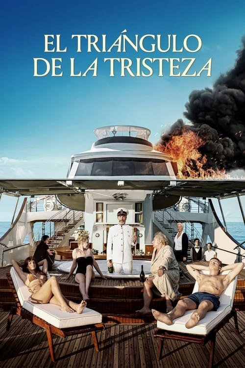

El triángulo de la tristeza (2022)
Sinopsis Rápida
Lujo, vómitos y revolución: un yate de ensueño se convierte en un escenario de caos social cuando una tormenta desata el verdadero rostro de los ricos y poderosos.
Sinopsis Detallada
El Triángulo de la Tristeza sigue a una pareja de modelos, Carl y Yaya, que se embarcan en un lujoso crucero con multimillonarios excéntricos. La aparente perfección se desmorona cuando una tormenta azota el yate, dejando a los pasajeros a merced de la naturaleza y revelando las hipocresías y desigualdades del sistema social. La película utiliza el humor negro y la sátira mordaz para criticar el capitalismo y la superficialidad de la alta sociedad. La tensión aumenta cuando la dinámica de poder se invierte, cuestionando la propia definición del lujo y el valor humano.
¿Por qué tenés que verla?
- Una crítica mordaz y hilarante del capitalismo y la desigualdad social.
- La dirección magistral de Rubén Östlund crea una atmósfera tensa y cómica a la vez.
- Desató un debate sobre la representación de la riqueza y la clase en el cine.
- Excelente actuación del elenco.
Idea Extra
Análisis del simbolismo del triángulo de la tristeza en la película y su relación con la estructura social.